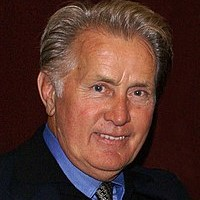
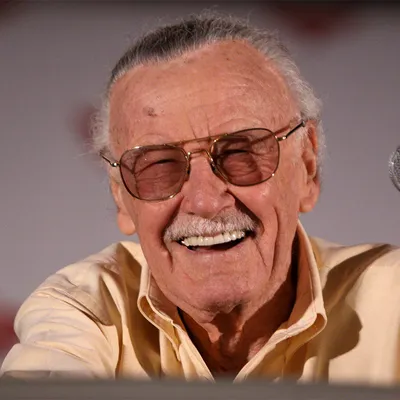

Elenco
Sobre Andrew Russell Garfield:
- Andrew Russell Garfield é um ator anglo-americano. Nascido em Los Angeles, mudou-se a Epsom, no Reino Unido, quando tinha três anos.
- Nascimento: 20 de agosto de 1983 (idade 39 anos), Los Angeles, Califórnia, EUA
- Indicações: Oscar de Melhor Ator, MAIS
- Irmãos: Ben Garfield
- Pais: Lynn Garfield, Richard Garfield
- Altura: 1,79 m
Sobre Emily Jean Stone:
- Emily Jean Stone, é uma atriz norte-americana. Começou sua carreira como atriz-mirim, atuando em peças teatrais como The Wind in the Willows.
- Nascimento: 6 de novembro de 1988 (idade 34 anos), Scottsdale, Arizona, EUA.
- Indicações: Oscar de Melhor Atriz.
- Cônjuge: Dave McCary (desde 2020).
- Altura: 1,68 m.
- Prêmios: Oscar de Melhor Atriz.
- Pais: Krista Stone, Jeff Stone.

Sobre Martin Sheen:
- Martin Sheen é um ator norte-americano, conhecido por suas performances como capitão Willard no filme Apocalypse Now, e também como o fictício presidente dos Estados Unidos Josiah Bartlet na série de televisão The West Wing.
- Filhos: Charlie Sheen, Emilio Estevez, Renée Estevez, Ramon Estevez
- Netos: Sami Sheen, Cassandra Jade Estevez, Lola Rose Sheen
- Altura: 1,7 m
- Pais: Francisco Estévez, Mary Ann Phelan
Sobre Sally Margaret Field:
- Sally Margaret Field é uma atriz, cantora, produtora, diretora e roteirista estadunidense. Venceu duas vezes o Oscar de melhor atriz, pelos filmes Norma Rae e Um lugar no coração, que a ela também atribuíram dois prêmios Globo de ouro de melhor atriz em filme dramático.
- Nascimento: 6 de novembro de 1946 (idade 76 anos), Pasadena, Califórnia, EUA.
- Cônjuge: Alan Greisman (de 1984 a 1994), Steven Craig (de 1968 a 1975).
- Filhos: Samuel Greisman, Eli Craig, Peter Craig
- Prêmios: Oscar de Melhor Atriz.
- Netos: Noah Craig, Isabel Craig, Ogden Craig, Sophie Craig.
- Pais: Margaret Field, Richard Dryden Field.

Sobre Stanley Martin Lieber:
- Stanley Martin Lieber, mais conhecido como Stan Lee, foi um escritor, editor, publicitário, produtor, diretor, empresário e ator norte-americano. Foi editor-chefe e presidente da Marvel Comics antes de deixar a empresa para se tornar presidente emérito da editora, bem como um membro do conselho editorial.
- Nascimento: 28 de dezembro de 1922, Manhattan, Nova Iorque, Nova York, EUA
- Falecimento: 12 de novembro de 2018, Cedars-Sinai Medical Center, Los Angeles, Califórnia, EUA.
Filhas: Joan Celia Lee, Jan Lee.
- Cônjuge: Joan Boocock Lee (de 1947 a 2017).
- Pais: Jack Lieber, Celia Lieber.
- Irmãos: Larry Lieber.
Sobre Rhys Ifans:
- Rhys Ifans é um ator e músico galês. Seus papéis mais conhecidos são nos filmes Notting Hill, Enduring Love e O Espetacular Homem Aranha.
- Nascimento: 22 de julho de 1967 (idade 55 anos), Haverfordwest, Reino Unido.
- Indicações: Prêmio BAFTA de Cinema: Melhor Ator Coadjuvante.
- Altura: 1,88 m.
- Pais: Beti Wyn Davies, Eirwyn Evans.
Sobre Dane William DeHaan:
- Dane William DeHaan é um ator americano. Ele é mais conhecido como Andrew Detmer no filme Chronicle de 2012, e como Harry Osborn em The Amazing Spider-Man 2.
- Nascimento: 6 de fevereiro de 1986 (idade 37 anos), Allentown, Pensilvânia, EUA.
- Cônjuge: Anna Wood (desde 2012).
- Irmãs: Meghann DeHaan.
- Pais: Jeff DeHaan, Cynthia Boscia.
- Altura: 1,73 m.
Desnvolvido Por Eduardo Gomes De Souza e Otávio Vitor benites baretta
Trabalho de Front-End1-IFMS Campus Dourados